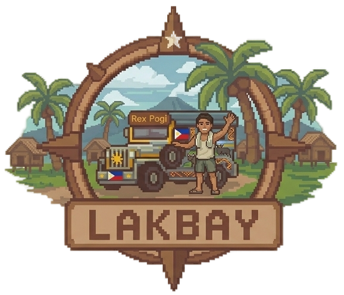
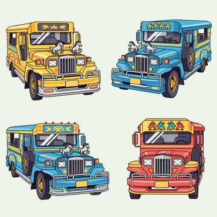

Back
Select Your Character
Boy
Girl
Back
Enter Character Name
Confirm
Back

Character
Main text
Sub text
Bahasa Indonesia text
▼ CLICK TO CONTINUE
Back
Tagalog Challenge
👉 Tap the correct word to fill in the blank!
Complete your introduction:
[ ? ]
Name
!
Ako si
Galing ako
Learnings & Usage Guide (1/2)
Prev
Next
Back
Salitang Hamon! (Word Challenge)
Question 1 of 10
Loading...
Tapos Na! (All Done!)
Try Again
📖 Word Bank (PH-EN-ID)
Back to Guide
Play Story Again
Salitang Aklat (Word Bank)
Back
After 1 week...